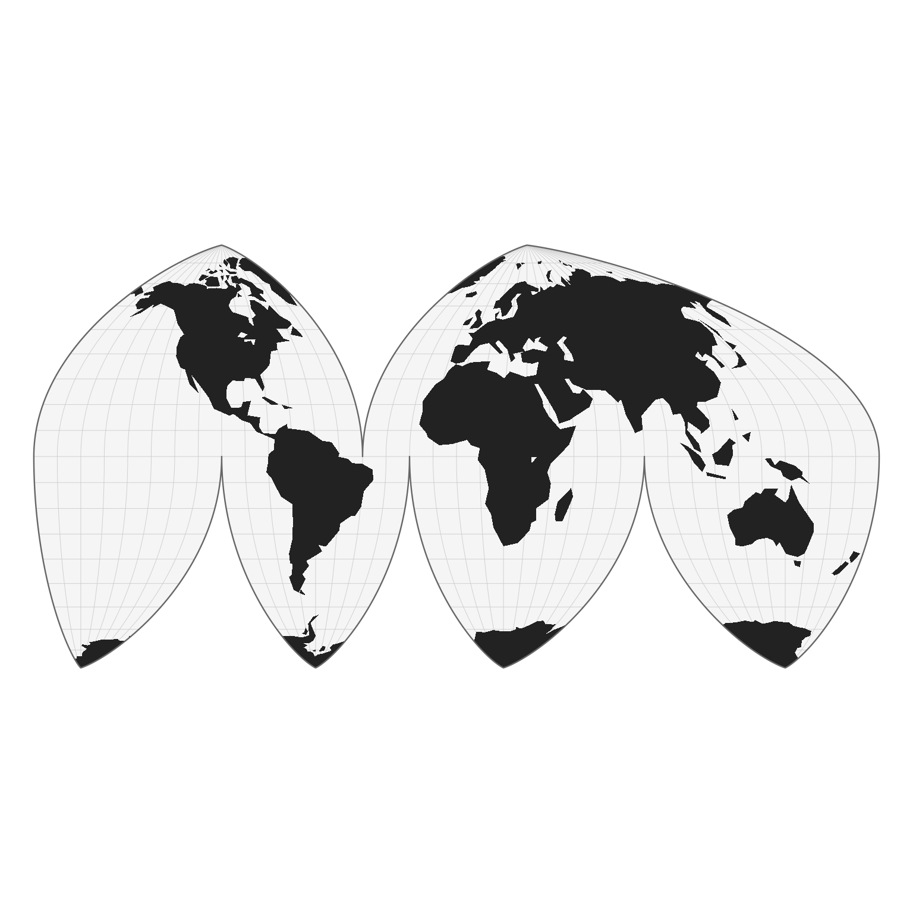

Render a complete planisphere from a projected object created with project().
The display includes the projected sphere outline, graticule, and geographic features.
Arguments
- result
A list returned by
project(), containing threesfobjects:basemap: projected geographic featuressphere: outline of the projected globegraticule: projected latitude/longitude grid
- title
Character string. Optional title to add to the plot. Default is NULL.
Details
The visualization follows the D3.js spherical projection model used in the package. The rendering order is: 1. Sphere background 2. Graticule 3. Projected landmass (basemap) 4. Sphere outline
All geometries are expected to be already projected in spherical coordinates. This function is intended for fast visualization and exploration of D3-based projections.
Examples
library(sf)
#> Linking to GEOS 3.12.1, GDAL 3.8.4, PROJ 9.4.0; sf_use_s2() is TRUE
world <- st_read(
system.file("gpkg/land.gpkg", package = "planisphere"),
quiet = TRUE
)
ct <- planisphere::init()
#> Loading JavaScript libraries
#> ✔ https://cdn.jsdelivr.net/npm/d3@7
#> ✔ https://cdn.jsdelivr.net/npm/d3-geo@3
#> ✔ https://cdn.jsdelivr.net/npm/d3-geo-projection@4
#> ✔ https://cdn.jsdelivr.net/npm/d3-geo-polygon@1
result <- planisphere::project(ct, x = world, proj = "geoInterruptedBoggs")
#> D3.js projection used: d3.geoInterruptedBoggs().scale(6378137)
planisphere::display(result)
